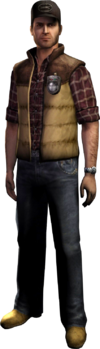
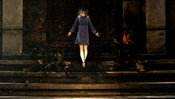

Серия игр
Silent hill - игра, в жанре хоррор. Ужасы, триллер, запутанность, приключения и борьба - то, что вы получите при прохождении данной игры. В эту игру я играю давно, прошла все серии игр (15), а также игра разделена на 3 части - Туман, Тьма и Кошмар.
Как видите, самая первая игра вышла аж в 1999 году. Это моя самая любимая часть. Скоро я расскажу о ней подробнее.
Лично я проходила почти все части этих игр, но чаще всего смотрела прохождения и теории. На основе моих нынешних знаний я постараюсь рассказать всё, что мне на сегодня известно о данных играх.
В общем я хочу рассказать на этом сайте про серию игр Silent hill и Silent Hill: Origins. Почему именно эти серии? Всё очень просто - эти серии пересекаются между собой. По идее самой первой серией данной игры является имеено серия Silent Hill: Origins. Самая первая игра Silent hill вышла в 1999 году, Silent Hill: Origins вышла в 2007 году. Просто Silent Hill: Origins раскрывает чуть ли не полностью сюжет двух этих серий игр, упомянутых мною ранее. В серии Origins рассказывают, что произошло в самом начале, 14 лет назад, как так получилось, что родилась Шерил, причина пожара дома Гиллеспи, что потом произошло с Алессой, в серии Silent hill рассказывается про альтернативный мир Алессы Гиллеспи, про рождение Шерил Мейсон, про наркоторговлю Майкла Кауфманна с Далией и про бога Самуэля (об этом всё расскажу позже). На этом сайте я постараюсь кратко объеденить эти 2 серии и рассказать основную суть.
Конечно, помимо этих сериий были еще серии Silent hill 2, Silent hill 3, Silent hill 4: The room, Silent hill: Homecoming, Silent hill : Shattered memories и Silent hill: Downpour.
Сюжет
Говорю сразу: ответов на все вопросы вы не найдёте, поскольку разработчики специально сделали так, чтобы мы некоторые вещи додумывали сами.
Silent hill
Начинается всё с того, что Гарри Мейсон напару со своей любимой дочуркой Шерил отправляется в Silent hill, он очень сильно любил свою дочурку: баловал, дарил подарки. И да, Шерил - не родная дочь Гарри.
Давным - давно была такая особа, как Далия Гиллеспи, фанатичка, которая поклонялась тайному культу, молилась иконам с изображением крылатого демона Самаэля и считала его настоящим богом, также она посвятила его "рождению" всю свою жизнь, и жизнь своей дочки - Алессы.
За 14 лет до событий Silent hill 1 у Далии рождается дочка, но вместо того, чтобы заботиться о своём единственном ребёнке, фанатичная верующая решила посвятить не только свою жизнь, но и жизнь своей дочки рождению бога, использовав маленькую девочку, как инструмент осуществления своих целей.
Далия очень жестоко обращалась с дочерью, так как верила, что истинный бог может быть рождён только из боли и страданий, и начала воспитывать несчастную Алессу именно в таком стиле, превращая жизнь дочери в настоящий кошмар на яву, взращивая в ней чувство отчуждённости и агрессии. В день ото дня мать читала своей дочери религиозную литературу, заставляла её молиться перед алтарём и иконами с изображением демона и даже частенько занималась рукоприкладством, насильно вбивая в голову маленькой девочки свои убеждения
Собственно из - за такого воспитания Алесса была всегда зашуганной и забитой, от чего над ней начали издеваться её одноклассники: исписанная парта и женский плач в туалете - этому подтверждение
Точно не известно, понимала ли мать вообще, что делает со своим ребёнком, врятли она заботилась о чувствах Алессы, все свои жёсткие действия Далия оправдывала благой целью, посредством силы боли и ненависти своей дочери вызвать бога, или же, правильно его назвать - демона и освободить человечество от существования полного страдания
Как мы видим женщина свято верила, что так будет лучше для её дочери и всех остальных людей
Находясь в последней локации, именуемая как Нигде, мы можем на миг увидеть отражение той боли, которую чувствовала Алесса на протяжении всего детства.
После того, как я вас немного ознакомила с игрой, думаю пора рассказать о самих персонажах, монстрах, альтернативном мире Алессы и тд. Но для начала хотела бы вам показать нитро, которое запускается при входе в игру. Оно, несомненно, связано с игрой и открывает много как подсказок, так и ответов, после нитро я вам подробнее всё расскажу, что же там было и значение данного нитро.
(Если кому интересно, или вы такой же меломан как я, то сюда я вставила музыку из заставки)
Думаю, пора рассказывать. В нитро были показаны не только моменты из игры, но и подсказки, сейчас я расшифрую вам, что конкретно было показано в нитро и какое отношение оно имеет к игре.
1."Страх в крови может породить страх во плоти"- цитата из начальной заставки, тут игра сама рассказывает свою суть, что страх - твой главный враг. Silent hill такая игра, в которой нет ни прямых путей, ни ответов на мучащие нас вопросы, и где твой страх - и загоняет тебя в тупик.
2.После цитаты мы видим что - то вроде портрета Алессы : коротко стриженные волосы, школьная форма, тут ей приблизительно 12 лет. На самом деле чуть ли не вся игра построена вокруг этой самой девочки, но обо всём по порядку.
3.После Алессы мы видим как Гарри и Джоди возле обочины дороги берут на руки Шерил, которая и становится их приёмной дочкой, отсюда и идёт сюжет.
4.Дальше мы видим как Шерил куда - то не спеша шагает, и если оринтироваться по логике, то на этом этапе Гарри уже находится в Silent hill.Тут Алесса призвала Шерил и нам показано, что Алесса всё ближе и ближе к своей цели.
5.После мы видим Гарри, который словно от кошмара очнулся в кафе, как мы потом узнаем, и он резко оглядывал местность вокруг него, словно кого - то искал, затем просто начинает прищуриваться. Ибо по сюжету его "убили" и он очнулся в кафе, не понимая произошедшего ранее.
6.После этого мы видим Лизу Гарланд, выходящую из под стола на фонарный свет, словно, боялась чего - то, затем обнимает главного героя, словно, ждала очень долго лет. Тут просто её начинает затягивать в альтернативный мир + наркотик от Майкла.
7.Затем видим нашу фанатичную Далию Гиллеспи, которая , по - видимому, снова молилась какой - то иконе. Но тут она обворачивается, как будто кто - то решил её, так сказать, навестить.
8.В следующем кадре появляется в булерной Алесса, одетая в школьную форму.
9.Следущий кадр (продолжение кадра 6). Лиза смотрит на Гарри, радуясь "хотя бы одному выжившему".
10.Потом мы видим, как Майкл Кауфманн, сидя на стулье спеша поднимает голову и смотрит прямо в камеру, в руках у него пистолет, смоторя по туше, он недавно убил какое - то чудовище, в его взгляде, как по мне, видно небольшое сожаление.
11.После этого мы видим Сибил(продолжение кадра 5), которая приближается к камере, затем она складывает руки на груди с лёгкой улыбкой на лице.
12.После этого мы видим проезжающую по дороге машину, в которой на заднем сидении спит Шерил, обнимая блокнот, а за рулём, естественно, сам Гарри.
13.Потом мы видим Алессу, она вся бинтах, видимо, от ожёгов, и возможно на тот момент она была беременна богом.
14.Потом мы видим машину нашего главного героя, а за ней на мотоцикле едет Сибил.
15.Потом Сибил после телефонного разговора поехала в Silent hill узнавать, почему же пропала там связь.
16.Затем идёт ссора между Лизой и Майклом, тут Майкл пытается остановить Лизу, но та грубо отбрасывает его руку с криками.
17.Сибил начинает обгонять машину Гарри. (продолжение кадра 14)
18.Лизе весело, ведь она под наркотиком
19.Гарри едет, его догнала Сибил, она смотрет на него и уезжает, пока тот смотрит на неё в ответ
20.В следующем кадре просыпается Шерил и улыбаясь смотрит на камеру
21.Тут скорее это изначальный кадр, а потом идёт кадр 4, камера приближается к Шерил, а та всего лишь слегка приподняла голову.
22.Я бы не сказала, что есть продолжение данному кадру, Гарри также едет, и спустя время видит мотоцикл Сибил, он в лежачем состоянии, а самой Сибил - нет.
23.Далия, насколько я поняла, от чего - то убегает, на лице у неё явный ужас.
24.Вы не поверите, но потом мы видим собственной персоной - дом Гиллеспи.
25.Я толком не поняла, что на кадре, но какя понимаю Шерил пытают или в неё что - то вселилось.
26.И последний кадр : на дорогу выходит Алесса, Гарри поздно её замечает, в итоге теряет управление и попадает в аварию.
Silent hill:Origins
Silent Hill: Origins, также известная в Японии как Silent Hill: Zero – пятая часть серии Silent Hill и приквел к первой игре Silent Hill.
События Origins, происходящие за 7 лет до событий Silent Hill расширяют предысторию, на которой построена вся серия.
Трэвис Грейди, дальнобойщик, который страдает от видений, которые почему-то кажутся ему знакомыми, опаздывает с доставкой однажды ночью. Он решает наверстать упущенное время и срезать дорогу через Silent hill по пути в Брамс. На подъезде к Silent hill прямо перед грузовиком на дорогу выбегает фигура, из-за чего Трэвис резко тормозит и выходит из грузовика.
Оказавшись на дороге, Трэвис видит темноволосую девочку в синей школьной форме. Преследуя её, Трэвис находит дом, охваченный пламенем. Около дома он видит женщину, но прежде, чем он успевает с ней заговорить, Трэвис слышит крик девочки изнутри и входит в дом, чтобы найти её. Пробираясь через горящий дом, Трэвис обнаруживает сильно обгоревшую девочку, лежащую поверх некой жертвенной метки. Он берёт девочку на руки и выносит из дома сквозь пожар, сдерживаемый появляющимися на пути метками. Выбравшись из дома, Трэвис слышит вдалеке сирены и теряет сознание.
На следующий день Трэвис просыпается на скамейке в Центральном Silent hill. Вспомнив события прошлой ночи, он отправляется в госпиталь Алкемилла в надежде узнать о состоянии девочки. В госпитале Трэвис мельком встречает доктора Кауфманна, но не получает никакой информации, поскольку Кауфманн утверждает, что новых пациентов не поступало. На втором этаже госпиталя Трэвис подвергается нападению медсестры. После боя и продолжения поисков в госпитале, Трэвис сталкивается с большим зеркалом со странным отражением. На другой стороне зеркала, показывающей Потусторонний мир, появляется темноволосая девочка, и Трэвис переносится в Потусторонний госпиталь.
 Позже Трэвис натыкается на дёргающегося в конвульсиях монстра и, одолев его, находит странный треугольный предмет, являющийся частью артефакта, известного как Флаурос. Появляется темноволосая девочка, и Трэвис снова теряет сознание. Вернувшись в Туманный мир, Трэвис просыпается в больничном фойе и встречает Лизу Гарланд, медсестру, которая сообщает ему о психлечебнице, а также говорит, что спасённая им Алесса погибла. Трэвис не рассказывает Лизе о монстрах, поскольку считает, что всё это было кошмаром, однако, когда он покидает госпиталь, город всё ещё кишит монстрами.
Позже Трэвис натыкается на дёргающегося в конвульсиях монстра и, одолев его, находит странный треугольный предмет, являющийся частью артефакта, известного как Флаурос. Появляется темноволосая девочка, и Трэвис снова теряет сознание. Вернувшись в Туманный мир, Трэвис просыпается в больничном фойе и встречает Лизу Гарланд, медсестру, которая сообщает ему о психлечебнице, а также говорит, что спасённая им Алесса погибла. Трэвис не рассказывает Лизе о монстрах, поскольку считает, что всё это было кошмаром, однако, когда он покидает госпиталь, город всё ещё кишит монстрами.
Пробираясь через Silent hill, Трэвис заходит в мясной магазин, где становится свидетелем убийства медсестры крупным монстром под названием Мясник. Когда Трэвис прибывает в лечебницу «Сидар-Гроув», он сталкивается с Далией Гиллеспи, женщиной, которую он заметил у горящего дома. Трэвис расспрашивает её, на что она даёт запутанные и непонятные ответы, раскрывая, что Алесса Гиллеспи, сгоревшая в пожаре – её дочь. Во время исследования лечебницы выяснилось, что мать Трэвиса, Хелен Грейди, пыталась убить его, когда он был ребёнком, и что она содержалась в женском изоляторе. На голосовой записи в лечебнице Хелен утверждает, что ей «теперь намного лучше», и что она хочет увидеть своего сына. Трэвис добирается до палаты своей матери и обнаруживает её Потустороннюю копию, заключённую в большой подвесной клетке. Победив её, он находит очередную часть Флауроса, после чего появляется Алесса, и Трэвис снова теряет сознание. Очнувшись, он находит театральный билет и приходит к выводу, что ему следует проверить театр «Арто».
В главном зале театра Трэвис находит Лизу, которая рассказывает ему о своей мечте стать актрисой и дразнит его, демонстрируя свои «актёрские способности» перед тем как уйти. Обыскивая театр, Трэвис сталкивается с новыми монстрами и узнаёт, что Алесса обычно приходила сюда, когда актёры репетировали исполнение «Бури» Шекспира. Костюм персонажа Калибана испугал Алессу, и она незаметно отомстила актёру, психокинетически вызвав у него головную боль и носовое кровотечение. Трэвис также обнаруживает, что он может менять реквизит и декорации на сцене театра, чтобы создать различные версии Потустороннего мира. Последнее изменение сцены открывает мрачный и унылый дом Калибана. Победив монстра, Трэвис подбирает ещё одну часть Флауроса. К этому времени Трэвис начинает понимать принципы поведения Алессы, но у него по-прежнему остаётся множество вопросов без ответов. В очередной раз звучит сирена, и Трэвис снова падает без сознания. Он просыпается в Туманном театре и обнаруживает изуродованное тело Ариэля. На трупе находится ключ от мотеля, где Трэвис и его отец Ричард оставались, когда навещали Хелен. Трэвис в последний раз пересекает улицы Silent hill, пройдя через книжный магазин и универмаг, и прибывает в мотель «Риверсайд».
Трэвис с борьбой пробирается по мотелю, наполненному множеством монстров, ранее не встречавшихся в Silent hill, переживая несколько переходов между Потусторонним и Туманным мирами, а также решая различные загадки и исследуя местность. В конечном счёте он сражается с Мясником, убивая его и используя его тесак, чтобы пронзить его труп. Трэвис продолжает искать ответы относительно своей семьи и находит доктора Кауфманна вместе с Лизой Гарланд, по-видимому прервав их тайную встречу; Лиза раздражённо покидает комнату, и доктор Кауфманн следует за ней, угрожая Трэвису и закрывая дверь. Трэвис уходит, используя зеркало в ванной, и наконец находит ключ от комнаты, в которой он и Ричард останавливались много лет назад.
Когда Трэвис открывает дверь в комнату 500 и спускается по длинной диагональной шахте к другому дверному проёму, происходит флэшбек, из которого становится ясно, что здесь повесился его отец. Оживший труп Ричарда говорит Трэвису, что ему пора «встретиться с тем, что произошло», и превращается в кричащего вытянутого монстра, заключённого в клетке, свисающей с потолка. Испытывая боль, Трэвис побеждает воспоминание своего отца и получает ещё одну часть Флауроса. На этот раз он заметно потрясён и срывается на Алессе, когда та появляется. Вновь раздаются сирены, и Трэвис теряет сознание. Проснувшись в подвале госпиталя, он находит последний, центральный элемент Флауроса и полностью восстанавливает артефакт.
На выходе из госпиталя к Трэвису обращается Далия, которая обвиняет его в освобождении Алессы. Обернувшись, Трэвис видит, что Алесса восстановила свои силы, придавая городу искажённое пылающее и кошмарное состояние. Он спасается бегством на Потусторонних улицах Silent hill, иначе именуемых как «Нигде». Используя нарисованную ребёнком карту, Трэвис избегает подавляющего числа монстров и пробирается к антикварному магазину «Зелёный лев», обозначенному на карте меткой «Иди сюда».
В магазине Трэвис находит членов Ордена, проводящих ещё один ритуал над сожжённой Алессой. Трэвис оказывается под воздействием усыпляющего газа и попадает в странную, кошмарную реальность, в которой он сталкивается с сущностью Алессы внутри Флауроса. Трэвис побеждает демона и возвращается обратно в антикварный магазин. Флаурос стреляет лучом света и поражает Алессу, в результате чего над её телом появляется светящийся младенец. Далее происходят различные концовки.
Персонажи
Про персонажей я расскажу много чего интересного.Как вы, наверное, заметили на моём сайте присутствует меню, с помощью которой вы можете перейти туда, куда вам хочется или про что интересно узнать. Вы, наверное, заметили , что в моём меню из персонажей выделяется именно 8, о которых скоро я расскажу побольше. Сначала я расскажу предысторию.
Изначально в игре присутствуют 6 персонажей : Гарри Мейсон, Шерил Мейсон, Лиза Гарланд, Сибилл Беннетт,Далия Гиллеспи и Майкл Кауфманн. Спросите почему их 6, если до этого я написала, что их 8? Всё просто : эти 6 персонажей встречаются нам всю игру, да, Алессу мы тоже видим, но она не являетя главным и второстепенным персонажем, она скорее галлюцинация главного героя. Мы видим с ней флешбеки, об этом тоже расскажу позднее. И есть еще такое персонаж Джоди Мейсон, я думаю вы уже поняли, что она является женой Гарри, но мы не видим её в игре, только флешбек связанный с ней.
Гарри Мейсон
Несомненно, самым первым в списке идут именно основные персонажи, а точнее Гарри Мейсон. Почему? Да потому что мы играем всю игру именно за него.Он тот самый персонаж, который рисковал своей жопой ради спасения своей дочери. Именно вокруг него верится сюжет игры.
Предыстория

Если верить игре и дополнительным источникам, то Гарри с Джоди были знакомы ещё с средней (или даже старшей) школы. Джоди рассталась со своим бойфрендом, а поскольку Гарри был в неё влюблён, то он начал ухаживать за Джоди. В итоге они поженились , но забеременеть не могли, так как Джоди была больна, и насколько я поняла, смертельно. Когда Гарри было 25 они с Джоди на обочине дороги подобрали девочку, которую назвали Шерил, а спустя 3 года Джоди умерла, но Шерил была ещё маленькой, чтобы это понимать, она жила обычной жизнью в то время, пока Гарри сильно грустил по своей умершей жене. Так то про родителей Гарри неизвестно, и судя по игре Шерил - единственное,что у него осталось.
В 32 года Гарри всё ещё пребывал в состоянии глубокой скорби, и Шерил убедила его взять отпуск и спокойно отдохнуть в курортном городе Silent hill.
Из-за проблем в пути Гарри и Шерил прибывают на окраину Silent hill ночью, следуя по извилистой дороге на склоне горы. Подъезжая к городу, Гарри видит Алессу, внезапно появившуюся на дороге. Он резко сворачивает машину в сторону, чтобы избежать столкновения и теряет сознание в результате автомобильной аварии. Очнувшись, Гарри видит, что Шерил бесследно исчезла.

Личность
Гарри — обычный писатель-публицист, и у него не очень много связей с другими людьми. Он неловок и неуклюж, но недостаток в физической подготовке он компенсирует своим мужеством и сообразительностью.
Хизер описывала Гарри как «беспокойного человека». Гарри был настолько озабочен её безопасностью, что дал ей электрошокер для самозащиты, хотя реальные причины его волнений позднее стали очевидны в жизни Хизер. Гарри также подарил ей кулон с Аглаофотисом на день рождения, хотя позже также оказалось, что это был ещё один акт защиты против культа, известного как Орден.
В новеллизации показано, что у Гарри имеется боязнь перед похитителями, убийцами, злоумышленниками по отношению к детям и подобными преступниками. Из-за этого он держит пистолет для самообороны в бардачке своего джипа. Также он написал книгу под названием «Маска преступника», представляющую собой анализ преступников, которые остаются незамеченными в обществе под видом обычных граждан. Гарри верит, что если оружие исчезнет из Америки, преступности не будет, и ему не придётся рисковать, защищая свою дочь.
Что касается веры Гарри, в новелле говорится, что он «вряд ли религиозен». Хотя в своей записной книжке Гарри отмечал, что они с Джоди «благодарили бога» за то, что нашли Шерил. Возможно, Гарри в какой-то степени верующий, но не слишком серьёзно относится к религиозным аспектам веры.
Silent hill
Пережив ужасающий кошмар, преследуя Шерил и «погибнув» в переулке, Гарри просыпается в кафе. Там он знакомится с полицейской Сибил Беннетт, которая после короткой беседы уходит за помощью, в то время как Гарри отправляется на поиски дочери. Сибил, похоже, не понимает Гарри, когда тот говорит о странных вещах, происходящих в городе.
Следуя подсказке, найденной в переулке, Гарри направляется в Начальную школу Мидвич. Исследовав её, он держит путь в Балканскую церковь, где встречает Далию Гиллеспи, жрицу местного культа, именуемого Орденом. Она даёт ему таинственный предмет под названием Флаурос, а также дальнейшие подсказки, хотя это ещё сильнее запутывает Гарри. На протяжении своих поисков Гарри часто сталкивается с Алессой, как позднее выяснится, дочерью Далии, однако она всегда исчезает, прежде чем он успевает заговорить с ней.
Далее Гарри посещает госпиталь Алкемилла, где встречает доктора Майкла Кауфманна и медсестру Лизу Гарланд. Хотя Лиза многое знает о городе и его истории, Гарри не удаётся получить ответы на свои вопросы.
Позже Гарри вновь сталкивается с Далией, которая говорит ему, что «Знак Самаэля», странный символ, который он раньше видел в разных местах, не должен быть завершён, иначе тьма поглотит весь город.
Гарри встречает Сибил, которая видела девочку на озере, после чего они находят скрытый алтарь в антикварном магазине, но, к смятению Сибил, Гарри исчезает. Тем временем Гарри снова оказывается в госпитале рядом с Лизой, которая указывает ему путь к озеру, но также говорит, что по необъяснимой причине не может пойти с ним. Направившись к озеру, Гарри проходит по канализационным тоннелям к курортной зоне.
Игрок может определить судьбу Кауфманна (и концовку игры), если поможет ему в баре «У Энни» и выполнит побочный квест — в каноничной хорошей концовке Гарри спасает Кауфманна и выполняет этот квест. Кауфманн благодарен, но дела вынуждают его уйти. В бензобаке мотоцикла Гарри находит тайник с загадочным красным пузырьком, однако Кауфманн снова появляется и рассерженно вырывает его.
Вскоре после этого кошмар потустороннего мира начинает полностью поглощать город. Перегруппировавшись с Сибил и решив остановить завершение знака Самаэля по просьбе Далии, Гарри направляется к маяку, а Сибил — в парк развлечений «Лейксайд». Гарри прибывает на маяк слишком поздно, поэтому он держит путь в парк развлечений вслед за Сибил, и обнаруживает, что она одержима неким паразитом. У Гарри не остаётся выбора, кроме как вступить с ней в бой, и в конечном итоге убить её согласно каноничной концовке.
Когда Алесса появляется в очередной раз, Гарри невольно использует Флаурос, чтобы обезвредить её. Появляется Далия и раскрывает, что манипулировала им, чтобы тот загнал Алессу в ловушку, так как только он смог так близко подобраться к ней, и то, что Алесса на самом деле её дочь.
Затем Гарри оказывается в нигде, где находит Лизу, которая начинает истекать и покрываться кровью, пытаясь приблизиться к нему, но Гарри в страхе убегает прочь и запирает её в комнате.
Найдя Далию и Алессу, и узнав, что Алесса и Шерил — две половины одной души, соединившиеся воедино, Гарри пытается остановить Далию от завершения ритуала по рождению Бога. В этот момент появляется Майкл Кауфманн и бросает в Алессу Аглаофотис, изгоняя из неё демоническое существо, Инкуба, который немедленно убивает Далию. Гарри сражается с Инкубом и побеждает его.
Когда потусторонний мир начинает разрушаться после поражения монстра, на мгновение появляется Лиза и утаскивает Кауфманна с собой в бездну прежде, чем тот успевает спастись. Инкубатор (Алесса) даёт Гарри ребёнка, реинкарнацию Шерил и Алессы, и открывает портал, чтобы он смог спастись.
Гарри покидает Silent hill с младенцем на руках. Он благополучно добирается до шоссе на окраине города и вглядывается в небо, обескураженный всем, что произошло.
Флешбеки
Флешбеки показаны в видео выше. Если именно с Гарри, то сним связаны флешбеки, где он на машине едет со своей дочкой Шерил в Silent hill (5 шт), где Лиза обнимает его, где на руках он держит Шерил, находясь рядом со своей женой Джоди, где он просыпается в кафе после нападения монстров.
Шерил Мейсон
По игре Шерил является приёмной дочкой Гарри и Джоди, насколько я знаю, на момент игры ей было 7 лет, и она очень любит рисовать, поэтому большую часть пути в Silent hill она рисует в своём альбоме, который Гарри подарил ей на пятый день рождения.Она исчезает после того, как Гарри попадает в автокатастрофу на подъезде к Silent hill.
В новеллизации игры Шерил описана как терпеливая и понимающая. Она очень близка со своим отцом, и, хотя она разочарована отсутствием у него возможности проводить с ней время из-за работы, она знает, что он делает это ради неё.
Приёмная мать Шерил тяжело заболела и умерла, когда Шерил было три. Шерил, скорее всего, была слишком маленькой, чтобы полностью осознать произошедшее, и не слишком страдала от этой потери, продолжая жить нормальной жизнью. Однако Гарри очень тяжело переживал смерть жены и полностью сосредоточился на дочери, которая стала самым важным в его жизни.
Когда Шерил было семь, она предложила Гарри, который всё ещё находился в состоянии глубокой скорби, провести отпуск в городе Silent hill. Она убедила его, что это хорошая идея, и Гарри согласился.
Если вы играли в Silent hill на PSPI как я, то наверняка в заставке видели флешбек, где Гарри едет с Шерил и на дорогу выбежал человек, и чтобы не произошло столкновение он резко свернул руль , в результате чего попал в аварию. Придя в себя он понял, что Шерил пропала.В неизвестный момент времени Шерил воссоединяется с Алессой, что полностью восстанавливает силы Алессы. Когда Гарри находил в городе кого - то нового, он всегда спрашивал про Шерил, видели ли её
Есть некоторые моменты появления флешбеков Шерил в игре:
1.В Потусторонней школе Мидвич Гарри слышит голос Шерил по телефону, умоляющий о помощи, после чего звонок внезапно прерывается.
2.Когда Гарри посещает торговый центр, он видит на ТВ-экранах изображение плачущей Шерил, зовущей его на помощь.
А также его могла видеть Сибил Беннетт, когда та прочёсывала Бахман-стрит, хотя неизвестно, была ли это на самом деле Шерил, это могла быть астральная проекция Алессы.
В хорошей концовке, соединившись, Шерил/Алесса трансформируются в Инкубатора, и, так или иначе, из Инкубатора появляется Инкуб. После того как Гарри одерживает победу над Инкубом, Инкубатор появляется вновь и даёт Гарри реинкарнацию Алессы и Шерил, объединённых в одном ребёнке.
В плохой и концовке после финальной битвы с Инкубатором Гарри слышит голос Шерил, благодарящий его и прощающийся с ним.
Silent hill:origins ближе к концу Трэвис Грейди находит обгоревшее тело Алессы Гиллеспи в ритуальном месте в антикварном магазине. Трэвис прерывает Орден в середине церемонии и сражается со Сном Алессы, запечатывая его во Флаурос. Затем Флаурос создаёт связь с Алессой, и появляется ребёнок, зависший над ней — Шерил. Это результат расщепления души Алессы и её проявления в виде ребёнка.
В хорошей концовке Origins появляется астральная проекция Алессы с маленькой Шерил на руках. Затем по радио звучит диалог Гарри и Джоди, обнаруживших брошенного ребёнка на обочине дороге. Джоди решает назвать девочку Шерил.
Портленд и дело об убийстве. После спасения из Сайлент-Хилла Гарри жил обычной жизнью в Портленде со своей новой приёмной дочерью. Гарри не был уверен, что он должен растить этого ребёнка, и подумывал убить и бросить его, потому что он подозревал, что ребёнок был реинкарнацией Алессы, а Алесса отняла у него Шерил. Подозрения Гарри, в конечном счёте, были верны, хотя неизвестно, понимал ли он, что в этом ребёнке также находилась часть реинкарнированной души Шерил. Вне зависимости от того, был ли ребёнок реинкарнацией Алессы или нет, Гарри, в конце концов, решил простить Алессу и вырастить ребёнка. Кроме того, он решил снова назвать ребёнка Шерил, по-видимому, из-за того, что Джоди выбрала это имя, и он хотел почтить её решение, также, как и свою предыдущую приёмную дочь.
Религиозная организация Сайлент-Хилла, Орден, планировала похитить перевоплощённую Шерил/Алессу и приступила к её поискам. Через пять лет после событий первой игры Гарри убил члена культа в порядке самообороны. Член культа пытался похитить Шерил/Алессу. Гарри был оправдан в суде и переехал в другой город, чтобы скрываться инкогнито. В целях обеспечения безопасности своей приёмной дочери, он велел ей перекраситься из брюнетки в блондинку и переименовал её из Шерил в Хизер. После этого они обосновались в апартаментах «Дейзи Вилла». Несмотря на смятение и разочарование по поводу того, кем Хизер могла быть, Гарри решил растить её.
События Silent Hill 3 берут начало через семнадцать лет после событий Silent Hill, основываясь на каноничной Хорошей концовке. Шерил/Алесса возвращается как Хизер Мейсон, которая ничего не помнит о своих прошлых воплощениях. Когда Гарри сбежал из Сайлент-Хилла и переехал в Портленд, он сначала растил её как Шерил. Это объясняет, почему Дуглас Картланд отмечает, что Хизер 24, а не 17. Во время событий игры Хизер может увидеть ту самую видеозапись с Шерил из первой игры в Потустороннем торговом центре. В Нормальной концовке Хизер решит снова вернуть себе имя Шерил, хотя скажет, что предпочитает свой светлый цвет волос.
Шерил и Алесса символически изображаются рядом с Валтиэлем как пара подвешенных ног в красных одеяниях. Это можно наблюдать в начальном ролике и в конце коридора в часовне.
Интересные факты
По словам разработчиков изначально Шерил хотели назвать Долорес по тем же причинам, что и персонажа Гарри, однако эта идея была отвергнута, и имя было взято у актрисы Шерил Ли, однако без какого либо особого значения.
Сибил Беннетт

Теперь и до Сибил очередь дошла. Сибил одна из моих любимых персонажей. В игре она исполняет роль полицейской из Брамса, города который недалеко от Сайлент хилла. Она чисто случайно оказалась в Сайлент хилле, была отправлена в Сайлент-Хилл, чтобы расследовать причину отсутствия связи с полицией Сайлент-Хилла, и невольно оказалась втянута в его странный мир. Она быстро становится другом Гарри. Она-стойкая и волевая полицейская, обычно сдержанная и спокойная в стрессовых ситуациях. В силу её высокого нрава она видит обыденными те вещи, которые обычно шокируют или удивляют простого человека (когда Гарри пришёл в себя в закусочной, Сибил просто улыбнулась).
Она ведёт себя очень смело и преданно, выполняя поставленную задачу, и рискует жизнью, пытаясь спасти Шерил и помочь Гарри. Кроме того, Сибил — скептик, она с трудом принимает мысль о паранормальной активности в городе; она категорически против оккультных тайн и считает причастных к этому людей или сумасшедшими или наркоманами.
В новелле раскрывается больше из прошлого Сибил. Когда она была маленькой девочкой, её родители были убиты неизвестным. Сибил, которая в тот момент пряталась в шкафу, смотрела сквозь щель и стала свидетелем того, как её родителей застрелили в голову. Этот случай оказал сильное влияние на её будущее и её выбор стать полицейской.
Впервые мы видим Сибил в закусочной, когда Гарри очнулся. Мы также видим флешбеки, где Сибил и Гарри в закусочной (где он приходит в себя), в парке аттракционов, где Сибил заразило какое - то существо, где она стоит с Гарри, а у него на руках Шерил (Сибил вместо Джоди, о Джоди расскажу позже), мы её видим на мотоцикле (она ехала как раз в Сайлент хилл), и еще один флешбек, где Гарри увидел опрокинутый мотоцикл Сибил, но её самой не было.
Пережив ужасающий кошмар и нападение монстров в городе, Гарри просыпается в заброшенной закусочной и видит Сибил. В новеллизации говорится, что она последовала за Гарри в переулок и спасла его от «монстров», а затем дотащила до кафе. Но новелла противоречит этому, утверждая, что, когда Сибил пришла в себя, она вошла в закусочную, чтобы укрыться от снегопада, и обнаружила уже спящего внутри Гарри.
Сибил не может найти логичного объяснения происходящему в городе, но чувствует, что что-то не так. Гарри — единственный человек, которого она видела в городе, а все средства коммуникации не работают. В новелизации Гарри также говорит Сибил, что у него был пистолет, и он умеет им пользоваться, но, вероятно, обронил его в переулке. Понимая тревожность ситуации, в которой они оказались, Сибил даёт Гарри лишний пистолет, который она нашла, и говорит ему быть осторожным с ним, после чего уходит искать помощи.
Спустя некоторое время Сибил мельком видит девочку сквозь туман на Бахман-роуд. Сибил следует за фигурой до разрушенной дороги, однако та исчезает, растворившись в воздухе.
Гораздо позже в игре Сибил видит Гарри и следует за ним в антикварный магазин «Зелёный лев». Там она объясняет, что полиция расследовала наплыв наркотиков в Сайлент-Хилле, и приписывает это ко всем происходящим вокруг странностям. Она, кажется, сопротивляется разговорам Гарри о демонах и оккультизме. Сибил и Гарри разделяются, когда Гарри исчезает после обнаружения скрытого алтаря в магазине.
Когда Гарри попадает на катер в альтернативной курортной зоне, он вновь встречает Сибил. На этот раз он настаивает, что происходит нечто странное. Сибил по-прежнему неохотно верит Гарри, несмотря на то, что видит, как туман и снег превращаются во тьму и дождь. Не имея другого выхода, Гарри и Сибил решают разделиться в поисках Шерил: Гарри отправляется к маяку, а Сибил держит путь в парк развлечений «Лейксайд».
Сибил узнаёт правду о Сайлент-Хилле слишком поздно; ей не удаётся встретиться с Гарри на катере, поскольку она подвергается нападению паразита в коллекторах, и её следующее столкновение с Гарри происходит в кошмарном парке развлечений на карусели. Будучи заражена тем же паразитом, который контролирует Докторов- и Медсестёр-марионеток, одержимая Сибил Беннетт достаёт пистолет и начинает стрелять в Гарри.
Если ранее раздобыть Аглаофотис, то Сибил возможно избавить от влияния паразита и спасти её. Если же нет, у Гарри не остаётся выбора, кроме как убить её в порядке самозащиты. Сибил падает на пол и корчится от боли, истекая кровью, после чего Гарри приседает рядом в печали и разочаровании. Смерть Сибил ведёт к Плохой или Хорошей концовке.
Если же Гарри спасает её жизнь, использовав Аглаофотис , Сибил падает на пол, а из её спины выползает паразит, и Гарри давит его ногой. Затем Сибил и Гарри обсуждают происхождение Шерил. В Нигде Сибил находит Далию и Алессу Гиллеспи раньше Гарри и пытается выстрелить, но психическая энергия Далии отталкивает и ошеломляет её.
Если вы достигли плохой концовки, Сибил появляется вновь после боя с финальным боссом. Она подходит к Гарри и встряхивает его, пытаясь привести в чувство, и говорит, что нужно уходить, пока Потусторонний мир рушится вокруг них.
Если вы получаете хорошую концовку, Алесса даёт Гарри младенца и открывает портал, чтобы он мог спастись. Появляется Сибил и следует за Гарри к выходу, пока Потусторонний мир рушится вокруг них. Затем Сибил и Гарри с ребёнком на руках бегут по Сайлент-Хиллу и исчезают в тумане. После этого жена Гарри во вступительном ролике игры заменяется на Сибил.
Вообще изначально правильной концовкой является та, где Сибил погибает. в Lost Memories утверждается, что это «традиционная концовка, связанная с третьей игрой». Однако, в разделе, посвящённом отношениям Сибил и Гарри после хорошей концовки, сценарист Хироюки Оваку заявил, что то, что случилось с Сибил было «оставлено воображению игроков»
Также, Сибил не появляется и не упоминается в Silent Hill 3, прямом продолжении Silent Hill. В Silent Hill: Homecoming помощник шерифа Уилер рассказывает Алексу Шеперду и Элль Холлоуэй о пропавшей в Сайлент-Хилле полицейской. Единственным свидетельством этого был её мотоцикл, который был найден разбитым на подъезде к Сайлент-Хиллу. Велика вероятность, что это и была Сибил.
Режиссёр Кейчиро Тояма, который покинул Team Silent после Silent Hill и не был связан с последующими частями серии, изначально заявил, что замышлял Хорошую концовку в качестве истинной и считает, что Оваку разрабатывал Silent Hill 3, опираясь на неё. Однако, Тояма передумал и теперь считает Хорошую+ концовку «истинной концовкой».
Интересные факты
1.Фамилия Сибил — это отсылка на настоящую полицейскую, которая была убийцей. Она была слегка изменена, чтобы звучать более обыденно. Имя же наводит на мысль о модели Сибил Бак и об актрисе Сибил Даннинг.
2.В североамериканском мануале для Silent Hill утверждается, что Сибил 22 года, в то время как в Lost Memories и в европейском мануале говорится, что ей 28. Похоже, что последний возраст более точен, и в североамериканском мануале была опечатка, так как Сибил была бы ближе по возрасту к Гарри, которому 32.
3.Сибил, как и многие другие персонажи, которые входят в кошмар Сайлент-Хилла, упоминается в книге Lost Memories как «Повешенный», двенадцатый из Старших арканов Таро, что означает самопожертвование, стойкость и преданность. Карта также может символизировать то, что возможно сам мир перевернут с ног на голову, а не повешенный человек, что напрямую связано с ситуацией Сибил и тем, как персонажи оказываются поглощены силами города.
4.Лори Бембенек может быть той самой реальной полицейской убийцей, которая упоминается в Lost Memories.
Лиза Гарланд
Лиза тоже одна из моих любимцев. О ней известно много чего. Она тесно связана с ритуалом, ну как связана, скорее стала жертвой обстоятельств. Подробнее про ритуал будет позже (Майкл и Далия). С ней тоже связано много флешбеков.
Хотя по большей части жизнь Лизы является загадкой, из событий Silent Hill и Silent Hill: Origins можно сделать вывод, что Лизе не чужды такие качества как сопереживание и сострадание. Так, несмотря на критичное состояние Алессы и осознание бесполезности процедур проводимых над пациенткой, Лиза продолжает заботиться о ней даже ценой сохранности своего рассудка. Кроме того она оказывает моральную поддержку Трэвису Грейди и Гарри Мейсону, что также характеризует медсестру, как добрую и отзывчивую девушку.
Однако, несмотря на эти положительные качества, Лиза испытывает сильный страх перед одиночеством, и её трудно назвать сильной и самодостаточной личностью. Она постоянно ищет поддержку в других людях и из-за своего страха может связаться далеко не с самыми надёжными людьми. Так она доверилась своему начальнику Майклу Кауфманну, который воспользовался доверчивостью девушки и приставил её присматривать за Алессой, которая содержалась в больнице тайно. Также доктор не брезговал ставить на Лизе эксперименты, тестируя на ней галлюциноген PTV, тем самым превратив медсестру в наркоманку.
В Origins Лиза рассказывает Трэвису о своём желании быть актрисой, но из-за своего воспитания и взглядов на жизнь (долг превыше всяких желаний) Лиза не может сделать выбор в пользу своей мечты. Кроме того, Трэвис выясняет, что Лиза крайне сильно поддаётся пагубному влиянию её начальника: она даже готова состоять в тайных отношениях с Кауфманом.
В детстве она училась в начальной школе Мидвич, а позже, в соответствии с традициями своей семьи, устроилась на работу в госпиталь Алкемилла. Лиза показала себя весьма квалифицированным и компетентным работником, из-за чего на неё обратил внимание её начальник доктор Кауфманн, который в дальнейшем и поручит Лизе уход за Алессой.
В обязанности медсестры входили уход за сильно обгоревшей в результате пожара Алессой, а также хранение любой информации о подвальной пациентке в строжайшей тайне от всех. В ходе выполнения данных обязанностей психическое состояние Лизы стало постепенно ухудшаться, так как она не могла понять, почему, несмотря на страшнейшие ожоги (которые гноились по двадцать раз на дню) и агонию (запредельная температура не спадала практически никогда), Алесса всё ещё жива. Лиза не знала, что жизнь девочки поддерживают магические заклинания её матери Далии Гиллеспи, а также Бог, появившийся внутри Алессы в результате ритуала, проведённого Далией.
На протяжении семи лет выполнения своих обязанностей Лиза медленно сходила с ума постоянно принимая наркотик PTV, на который её подсадил Кауфманн, считая, что этот препарат позволяет ей сохранять трезвость рассудка. В какой-то момент Лиза решила уйти, но угрозы лишения доступа к PTV вынудили её передумать. Уже к этому моменту Лиза начала видеть страшнейшие галлюцинации, которые скорее всего были вызваны погружением в кошмарный мир Алессы, накрывший весь Сайлент Хилл.

Silent hill : Origins
Хронологически Лиза изначально появляется в Origins, где Трэвис Грейди впервые встречает её в госпитале Алкемилла, в котором Лиза работает стажёром. Она сообщает Трэвису, что спасённая им Алесса мертва, а так же интересуется его собственным самочувствием. После этого она ссылается на то, что её начальник назначил ей встречу в лечебнице «Сидар-Гроув» и уходит.
Вторая встреча происходит в вышеупомянутой лечебнице, где Лиза всё ещё ждёт Кауфманна и попутно рассказывает о какой-то женщине, которая ждёт своего сына. На вопрос Трэвиса, о ком идёт речь, Лиза отвечает, что он должен быть в курсе, и уходит.
Следующая встреча происходит в театре «Арто», где Лиза рассказывает Трэвису о своей мечте стать актрисой, флиртуя с ним, но потом говорит, что просто отрабатывала своё актерское мастерство.
Последний раз Трэвис застаёт Лизу в мотеле «Риверсайд» в компании с Кауфманном. По её раздражённому тону можно понять, что Трэвис прервал их тайную встречу. Кроме того, в номере можно найти следы PTV, что намекает на то, что зависимость Лизы от препарата началась за семь лет до событий первой игры.
Впервые Гарри Мейсон встречает Лизу в Потустороннем госпитале Алкемилла, в ординаторской комнате, где девушка от страха забилась под стол и вылезла оттуда, только когда Гарри вошёл в комнату. Выясняется, что у Лизы жуткие провалы в памяти, и она не помнит, что вообще тут делает и чем занималась до того, как оказалась в ординаторской. Помочь Гарри в поисках его приёмной дочери Шерил Лиза также не в состоянии. Их диалог прерывает вой сирены и уже в туманной версии госпиталя Лиза исчезает из ординаторской.
В дальнейшем при переходе из Туманного мира в Потусторонний Гарри так или иначе несколько раз попадает в госпиталь. Постепенно Лиза делится полезной информацией с Гарри, а также начинает восстанавливать свою память. Однако на все уговоры Гарри пойти с ней Лиза ссылается на жуткий холод по всему телу и необъяснимую невозможность покинуть госпиталь. Также во время одного из таких визитов Лиза указывает Гарри короткий путь до курортной части Сайлент Хилла через канализацию.
В Нигде Лиза сообщает Гарри, что она отважилась спуститься в подвал больницы и начала «понимать», что происходит. Она говорит, что понимает, почему она «жива», когда «все остальные мертвы», и что она не единственная, кто всё еще находится здесь, она «такая же» как и «они», но просто не замечала этого раньше. Из её слов можно сделать вывод, что на данный момент Лиза ведёт фактически призрачное существование в Потустороннем Сайлент Хилле, и что, по-видимому, она разделила судьбу всего остального медперсонала, который Алесса обратила в медсестёр- и докторов-марионеток. В своей попытке получить поддержку от Гарри Лиза пытается приблизиться к нему, но её слова жутко пугают писателя, и он убегает прочь, оставляя медсестру в глубоком отчаянии, обречённую на окончательное превращение в монстра.
Если игрок решит вернуться в ту комнату, где происходила последняя встреча с Лизой, то обнаружит, что девушка исчезла, а на полу появился её дневник, где описаны переживания и страхи Лизы. Судя по последним записям, Лиза весьма сильно подсела на препараты, что и стало одной из причин её погружения в кошмар.
Загадочная видеокассета, которую Гарри нашёл ранее, теперь может быть воспроизведена, если он вставит её в видеомагнитофон. На записи видно, как Лиза, закрыв лицо руками, спрашивает невидимую фигуру (скорее всего, Кауфманна), почему, несмотря на её усилия и тяжёлое положение, состояние пациентки не меняется. Возможно данная запись была сделана с целью шантажа Лизы, если она в будущем ещё раз попробует отказаться от работы.
Последний раз Лизу можно встретить только в контексте Хорошей и Хорошей+ концовок, где медсестра появляется после победы над Инкубом. Как только Кауфманн собирается убежать из Нигде, окровавленная (возможно, ставшая монстром) Лиза поднимается сквозь пол и утаскивает его за собой в недра кошмара.
Интересные факты
По словам разработчиков имя Лизы было позаимствовано у актрисы, играющей убийцу-медсестру в фильме «Пожиратели плоти» (1979). Фамилия заимствована у Джуди Гарланд, которая сыграла Дороти Гейл в «Волшебнике страны Оз», потерявшуюся в сказочной стране.
Томм Халетт, продюссер Origins о Лизе: «Лиза является одним из моих любимых персонажей в серии. Что меня заинтересовало в ней, так это то, что такой тип её характера оказался просто ещё одной частью города. В то же время предполагается, что «реальная» Лиза была более беспокойной личностью. Это неплохое разделение, так как даже в реальной жизни хорошие и добрые люди могут иметь тёмные стороны, которые мы можем не замечать. Я думаю, что в Origins мы как раз наблюдаем эту тёмную сторону и, возможно, это далеко не всем по душе... но это всё ещё что-то «настоящее», с чем Лиза должна справляться, и, вероятно, справлялась, никогда не раскрывая эту сторону Алессе. Опять же, поскольку это Silent Hill, возможно, Climax видели «другую» Лизу, чем вы, и, может быть, я видел третью Лизу, когда играл в игру».
Одной из вероятных причин почему Лиза так долго не перерождалась в медсестру-марионетку является защита со стороны Алессы, которая лишила её памяти о происходящих событиях, чтобы девушка не осознала весь ужас своего положения. Вероятно Алесса так хотела «отблагодарить» Лизу за заботу.
По одной из теорий Кауфманн убил Лизу до начала событий Silent Hill. Однако этому нет никаких подтверждений. Вместо этого, Масахиро Ито предположил, что Лиза могла бы умереть от передозировки PTV.
Согласно словам разработчиков фамилия Лизы была заимствована у актрисы Джуди Гарланд, которая также умерла от передозировки.
Другая теория заключается в том, что на момент событий Silent Hill настоящая Лиза уже давно мертва, а та, которую мы встречаем в госпитале является либо галлюцинацией, либо проявлением. Эта теория также ничем не подтверждена.
Не следует считать Лизу погибшей. Когда Лиза начинает покрываться кровью, не стоит думать, что она умирает, так как при определённых условиях Лиза появляется в финальной сцене и утаскивает Кауфманна за собой. Умерла ли она физически после событий Silnt Hill также неизвестно. Возможно, она всё ещё «жива», но находится в ловушке Потустороннего мира.
Масахиро Ито однажды сказал, что, по его мнению состояние Лизы близко к призрачному , однако не стоит воспринимать это как каноничное заявление, так как одним из сценаристов первой части был Кейчиро Тояма.
При исследовании Нигде Гарри натыкается на склад в котором обнаруживается непонятно как там оказавшийся пакет с мармеладными конфетами. Вероятнее всего, Лиза хотела угостить этими конфетами Алессу, чтобы порадовать девочку. Связь с Лизой в этом случае косвенно подтверждается расположением комнат по отношению друг к другу (недалеко от палаты с телевизором для просмотра видеокассеты и палаты Алессы; также на склад был запрещён вход всем кроме Лизы).
В новелле Лиза изображена как заражённая паразитом медсестра (наподобие медсестёр- и докторов-марионеток). Однако каноничность новеллы под вопросом, так как имеется ряд расхождений с Silent Hill. В частности упоминается, что паразит является производным от Аглаофотиса, что идёт в разрез с игровым каноном, так как именно Аглаофотис может спасти Сибил от паразита и извлечь из Алессы Инкуба - финального босса.
Со слов Сэма Барлоу (ведущего дизайнера Origins) на момент событий Origins Лизе 16-17 лет. В штате Мэн как раз по достижению такого возраста разрешено устраиваться на работу стажёром.
Алесса Гиллеспи
На протяжении всей игры мне безумно было жалко не только Лизу, но и Алессу. Она стала жертвой в свои 7 лет, да даже была ею рождена. Чтобы вы понимали, Алесса не была запланированным ребёнком, точнее была, но только для рождения Бога. Её сумасшедшая мама, которая Далия заставляла дочь мучиться, Алесса не получала от неё ни любви, ни ласки, ничего! Мне было безумно жалко Алессу. Какого это, родиться в семье, где нет отца и есть только сумасшедшая на голову мать, которая постоянно твердит "Ты была рождена , чтобы родить Бога"? Помимо этого всего, над Алессой издевались в школе. То есть Алесса не чувствовала себя живым человеком.
История Алессы заключается в поиске её внутренней силы и упорства, несмотря на то, что она окружена и находится под влиянием злых, мрачных, жестоких и развращённых людей. Алесса воплощает в себе цепкий, решительный характер. Она обладает поразительной стойкостью и силой воли, о чём свидетельствует перенесённые ею семь долгих лет боли, страдания и безумия и отказ позволить использовать себя.
Алесса также переполнена злобой и ненавистью, которая больше всего проявляется в Silent Hill: Origins, причиной чего вероятно было жестокое и злонамеренное обращение с ней её сверстников, матери, а также нахождение Бога внутри неё против её воли. Не без оснований Алесса также считается мстительной, презираемой и обладающей тёмной душой. Её реинкарнация, Хизер, тоже показана ищущей мести.
Потусторонний и Туманный миры являются представлением Сайлент-Хилла, искажённого восприятием Алессы и её переживаниями там. Они содержат монстров и мрачные сюрреалистические образы, а также кровавые распотрошённые трупы, мёртвых животных, окровавленные медицинские каталки и т.д. Это связано с богом, находящимся в её чреве, который постоянно подпитывал её невообразимыми ужасами и негативными мыслями.
У Алессы было несколько страхов: она боялась больших собак (кинофобия), насекомых (инсектофобия), червей (сколецифобия), змей (офидиофобия), огня (пирофобия) и даже некоторых взрослых. Многие из монстров в Silent Hill являются проявлениями этих ужасов.
Алесса хранила коллекцию бабочек в своей комнате и имела двух кукол, одну из которых она назвала «Скарлетт», и часто спала вместе с ними в постели. Алесса рисовала монстров всякий раз, когда была одна. Она любила играть в карточные игры с Клаудией и обычно выигрывала. Ей нравилась литература, в том числе «Приключения Алисы в Стране Чудес», «Волшебник из Страны Оз», «Матушка Гусыня», «Золушка» и «Затерянный мир», и, возможно, Эдгар По и «Макбет» (уже будучи Хизер). Тем не менее, Хизер отмечает, что Алесса «всегда» скучала и грустила.
Детство у Алессы было очень грустным. Она - дочь Далии Гиллеспи, жрицы религиозного культа, известного как Орден, действующего в курортном городке Сайлент-Хилл. Информации об её отце нет. Далия и Алесса жили вместе в доме в деловом районе Сайлент-Хилла. Алесса родилась с удивительными сверхъестественными способностями, включая телекинез, левитацию, предвидение и астральную проекцию. Хизер также говорила, что «она могла бы убить кого-то просто пожелав этого». Согласно заметке в Origins, это может быть сделано путём проецирования её желания убить в тело жертвы. Происхождение способностей Алессы неизвестно, хотя они могут быть результатом духовной силы земли Сайлент-Хилла или даром от Бога Ордена. Способности Алессы в конечном счёте привели к тому, что она была отвергнута и стала изгоем в Начальной школе Мидвич, где её подвергли жестоким издевательствам, заклеймили ведьмой и желали смерти. Школьные «друзья» Алессы отказались от неё за то, что она отличалась от них, и исцарапывали её парту оскорблениями вроде «Убирайся», «Сдохни» и «Воровка». Учительница Алессы, К. Гордон, заметила издевательства над Алессой и думала, что Далия физически наказывает и бьёт её, особенно за нежелание верить в Бога. Под этим также подразумевалось, что Далия запирала Алессу на тёмном чердаке их дома на длительные периоды времени за любое нерелигиозное поведение. Гордон задавалась вопросом, можно ли что-то сделать, чтобы помочь, и подумывала о консультации с адвокатом.
Единственной подругой маленькой Алессы была Клаудия Вульф, девочка на год-два младше Алессы, которая сопереживала ей, поскольку сама подвергалась жестокому обращению в семье. Между ними была крепкая дружба, и Алесса думала о Клаудии как о своей «младшей сестре», хоть они и не были родственницами. На 6-й день рождения Клаудии Алесса подарила ей открытку, в которой говорилось: «Я люблю тебя так, как если бы ты была моей настоящей сестрой. Это тебе!». Они проводили время вместе, занимаясь рисованием и играя в карточные игры, в которых Клаудия часто проигрывала и плакала из-за этого. Алессе хотелось «хороших папу и маму, весёлую школу и счастливый мир, где бы все улыбались и смеялись весь день» - то, чего у Алессы и Клаудии никогда не было. Алесса мечтала о появлении Рая Ордена, видении утопического мира без человеческого зла, ненависти, жадности, войн, болезней, голода или старости. Алесса верила, что их нынешний мир должен быть очищен огнём перед созданием Рая, и делилась этими мыслями с Клаудией с хорошими намерениями о вечном счастье и блаженстве. Алесса росла с учениями Ордена. Далия часто приводила её в церковь Ордена, и Алесса рассматривала витражи наверху, которые изображали Бога и мужчину и женщину, породивших Её. Алесса приходила поклоняться Богу и просила, чтобы её молитвы были услышаны, однако они так и остались без ответа.
Из-за ритуального огня Алесса получила бесчисленное количество ожогов третьей и четвёртой степени, что должно было привести к её смерти, но она выжила из-за Бога внутри неё. Ритуал, проведённый Далией, держался в тайне, и жители Сайлент-Хилла предположили, что дом Гиллеспи сгорел из-за устаревшего котла, о чём было написано в газете. Также на месте пожара Майклом Кауфманном было оставлено фальшивое тело. По-видимому, котёл стал козлом отпущения и умышленным прикрытием со стороны Ордена, чтобы скрыть правду и их участие в сжигании Алессы. Общественность посчитала, что Алесса погибла в огне. Только Далия, Кауфманн, несколько членов Ордена и молодая медсестра, работающая в госпитале, знали, что Алесса была ещё жива. После пожара и событий Origins Алесса была доставлена в госпиталь Алкемилла и спрятана в подвальном помещении госпиталя Далией и доктором Майклом Кауфманном, у которого был союз с культом, сосредоточенный вокруг наркотика PTV. Кауфманн приказал персоналу больницы не входить в подвал. Ухаживать за Алессой была приставлена молодая медсестра, Лиза Гарланд, а взамен Кауфманн снабжал её PTV. Алесса страдала от высокой температуры и едва дышала, испытывая тяжёлую мучительную боль и страдания, из-за чего ей хотелось умереть. Её раны постоянно сочились кровью и гноем, что требовало частых перевязок. Прошли месяцы и годы, обугленная кожа Алессы стала заживать и восстанавливаться, хотя у неё по-прежнему оставалось множество ожогов и шрамов. Несмотря на то, что Бог находился в чреве Алессы, Алесса не могла родить Её. Каждый день сводил Алессу с ума от мучительной боли и страданий, а Бог разъедал её изнутри. Бог развивался, постоянно подпитываясь страданиями Алессы, а также её ненавистью, страхом и ужасом. Далия поддерживала жизнь Алессы, используя магические заклинания, а злобное божество защищало тело своей матери. Алесса перенесла судьбу «худшую, чем смерть», описывая это как пребывание в ловушке в бесконечном кошмаре, от которого она никак не могла пробудиться. Она хотела умереть и прекратить свои страдания. Тем не менее, этот кошмар продолжался семь лет. В возрасте четырнадцати лет Алесса в конечном итоге будет спасена Гарри Мейсоном.
Для того чтобы заманить недостающую часть души Алессы обратно, чтобы Бог мог родиться, Далия намеренно держит свою дочь в состоянии мучительной боли в течение семи лет до первой игры, чтобы заставить Шерил вернуться. Алесса, однако, решает помешать своей матери завершить начатое. В бесконечной агонии Алесса обращается к Шерил, зазывая её в город с целью воссоединения своей души и последующего самоубийства, чтобы таким образом Бог никогда не мог родиться из её чрева. По возвращении Шерил скрытые способности Алессы активируются, и она погружает Сайлент-Хилл в туман и измененную реальность, чтобы предотвратить исполнение плана своей матери. Многие из радикальных изменений, которые происходят с городом в игре, например ужасающие существа, появляющиеся в нём, вызваны фантазиями и иллюзиями Алессы. Почувствовав, что Шерил находится неподалёку от Сайлент-Хилла, Алесса использует свою астральную проекцию и появляется перед машиной Мейсона, заставляя Гарри резко свернуть с дороги в сторону от обрыва. Алесса разделяет Шерил и потерявшего сознание Гарри, заманивая её к себе. Объединение Шерил и Алессы было завершено, усиливая способности Алессы и позволяя вновь использовать их. Слившись с Шерил, Алесса переродилась после своих тяжёлых ожогов, разрушила заклинание, которым Далия и жрецы культа связали её, и начала действовать. Пока Гарри занимается поисками пропавшей Шерил в Сайлент-Хилле, им манипулирует Далия, заставляя поверить, что Алесса обладает «Знаком Самаэля» и является демоном. Далия говорит Гарри использовать священный предмет, Флаурос, чтобы остановить Алессу от распространения Знака Самаэля и перманентного погружения всего города в Потусторонний мир. Попавшись на приманку, Гарри противостоит Алессе в парке развлечений «Лейксайд» и умоляет её отпустить Шерил. В ответ Аллеса с помощью телекинеза отталкивает Гарри и использует на нём силовое поле. Флаурос активируется сам по себе и обезвреживает Алессу путём использования энергетического луча света, из-за чего Алесса вскрикивает и падает без сил. Появляется Далия и ругает Алессу за её недавнее поведение, на что Алесса отвечает матери уйти от неё. Растерянный Гарри затем переносится в Никуда, где встречает видение Алессы, хихикающей в коридоре, молящейся у алтаря и плачущей под столом на тёмном чердаке. Алесса, воссоединённая с Шерил, оказывается захваченной Далией, и та готовится к завершению ритуала по рождению Бога. Гарри узнаёт, что Алесса на самом деле пыталась сдерживать Потусторонний мир, используя Печать Метатрона. В зависимости от действий игрока на протяжении всей игры, Алесса возникает либо в виде облачённой в белое фигуры под названием Инкубатор, либо в виде демонического Инкуба; последний появляется в случае, если бывший сообщник Далии, доктор Кауфманн, бросает в Алессу образец Аглаофотиса, преждевременно изгоняя Бога. В любом случае, рождённое божество убивает Далию и сражается с Гарри в качестве финального босса. После поражения Инкуба исчезающий призрак Алессы создаёт небольшой портал обратно в реальный мир, чтобы позволить Гарри уйти после передачи ему новорождённого ребёнка, содержащего в себе объединённую душу Алессы и Шерил, которая всё ещё беременна Богом. Затем Алесса указывает на свет как путь для Гарри, чтобы выбраться. Гарри смотрит на реинкарнацию Алессы и размышляет, что ему делать, и, в конце концов, решает забрать её с собой. Алесса, используя оставшиеся силы, останавливает огонь, окружающий Гарри, после чего падает. С тех пор душа Алессы живёт в новом ребёнке, которого изначально Гарри назвал Шерил, а затем Хизер. При отсутствии воспоминаний о своей прежней жизни как Алессы, Шерил/Хизер живёт жизнью без боли и страданий, жизнью, которую хотела Алесса.
Через некоторое время после событий Silent Hill и до событий Silent Hill 3, в этот семнадцатилетний отрезок времени, Орден объявил Алессу «святой» в качестве «Святой Богородицы и дочери Бога». Это иронично, потому что Алесса стала святой той самой религии, которую она презирала. Её мотивы в Origins и Silent Hill заключались в том, чтобы остановить культ и предотвратить рождение Бога, однако Орден манипулировал правдой, чтобы казалось будто Алесса хотела родить Бога и распространять идею Ордена о Рае. Хотя Алесса и мечтала о Рае, она передумала и решила, что Рай, вызванный таким демоническим богом, не принесёт счастья.
По словам разработчиков изначально Алессу звали Азия, в честь дочери итальянского кинорежиссера Дарио Ардженто. Однако, поскольку это необычное имя, они решили переименовать её.
В ранних концепциях для первой игры Алесса испытывала страх перед куда большим количеством животных. В игровых файлах есть неиспользованные модели для монстров на основе бабочек, лягушек, обезьян, змей, кур и даже страусов и скатов.
Существует ошибочное мнение, что из-за повышенного уровня стресса Алессы её психическая энергия вызвала взрыв котла в доме Гиллеспи, который и стал причиной пожара, о чём было сказано в статье о пожаре. Это только теория, и она никогда не была официально подтверждена или доказана. Возможно, что Далия намеренно сожгла Алессу в огне в качестве одной из частей ритуала, и что котёл не имел отношения к пожару и был прикрытием Ордена, чтобы скрыть правду о ритуале. Также, в статье о пожаре говорится, что котёл «считался источником огня», а не то, что он действительно был источником огня. Кроме того, Кауфманн оставил фальшивое тело на месте пожара, чтобы фальсифицировать смерть Алессы, так что ему было бы нетрудно сделать и поддельные доказательства того, что причиной пожара стал котёл.
Когда об этом спросили Кейчиро Тояму (одного из создателей Silent Hill) он также подумал, что Алесса была специально сожжена Далией и её культом.
Внешность Алессы могла быть навеяна персонажем фильма «Легенда адского дома», медиумом Флоренс Таннер. Помимо прочих особенностей у них похожи причёски: длинные волосы, завязанные в хвост, которые выглядят короткими с определенного ракурса. Автор романа «Адский дом», по которому и была снята эта экранизация, Ричард Мэтисон также является вдохновителем серии, и улица Мэтисон-стрит названа в его честь.
Также образ Алессы, вероятно, был навеян Кэрри Стивена Кинга. Обе девочки – подростки, родившиеся со сверхъестественными способностями. Обе имеют фанатичных религиозных матерей и подвергаются травле в школе. В играх существуют также другие отсылки к Стивену Кингу, в том числе плакаты Кэрри напротив антикварного магазина «Зелёный лев».
Что касается второстепенной части сюжета, Алесса имеет сильное сходство с Альмой Вейд из серии F.E.A.R. У обеих никогда не упоминается один из родителей (мать Альмы и отец Алессы), а от рук другого они обе перенесли ужасные мучения, и обе позднее использовали свои психические способности, чтобы отомстить ответственным за их страдания. Обе обладают мощными псионическими силами, в том числе способностью создавать монстров из глубин их разума. Также они обе подверглись насильственному оплодотворению неестественными путями, будучи в подростковом возрасте. И Алесса и Альма отдали новорождённых протагонистам в концовках соответствующих игр перед тем, как исчезнуть. Также их имена начинаются на «Ал».
Личность и внешность Альмы во многом схожа с киноверсией Алессы, которая гораздо более эмоциональна и мстительна, чем её версия в игре. Как и Альма, киноверсия Алессы также появляется в своей детской форме на протяжении всего фильма, а в концовке предстаёт как больная, сильно израненная взрослая женщина.
Алесса - первый персонаж, который появляется в серии Silent Hill, дебютировав в течение нескольких секунд вступительного ролика Silent Hill.
Одна из любимых книг Алессы - «Затерянный мир» Артура Конан Дойла, существо из которой послужило образом для создания Воздушного крикуна. Другая её любимая книга, «Алиса в Стране Чудес», упоминается в головоломке, открывающей дверь в госпиталь Алкемилла. Эту книгу даже можно найти на книжной полке в спальне Алессы.
В книге Lost Memoris Алесса упоминается как «Императрица», третья из Старших арканов Таро, что обусловлено её абсолютной властью над городом. Императрица часто представляется как мать, создатель и воспитатель. Иногда в некоторых колодах она может быть изображена беременной. Она может представлять сотворение жизни, подобно тому, как Алесса беременна Богом. Императрица может олицетворять прорастание идеи до её полного рождения, а также необходимость восприимчивости к изменениям, что находит отражение в том, как жертва Алессы становится катализатором для изменения города Сайлент-Хилл.
В городском центре Сайлент-Хилла находится телевизор с видео, на котором плачет Шерил. Если видео стоит на паузе, можно увидеть изображение Алессы каждые несколько кадров.
На итальянском имя Алессы означает «защитник человечества». Это может быть отсылкой на то, что её мать использует жертвоприношение Алессы для рождения Бога и создания Рая, а также желание Алессы предотвратить рождение Бога для человечества.
На Нимбе Солнца есть надпись «Алесса» зеркальными венгерскими рунами. Можно предположить, что Далия назвала её Алессой, потому что это имя имеет глубокое значение для Ордена. Нимб Солнца также содержит имя Далии.
В Silent Hill 3 в Потустороннем офисном центре и госпитале Брукхейвен есть несколько повторяющихся изображений рта, рта со скобами, ушей и глаза. На вопрос, что это означает, Масахиро Ито ответил: «"Рот" означает кричащее от всего сердца безумие Алессы. Потусторонний мир Silent Hill 3, в который входит Хизер, отражён в сознании Алессы. Алесса подверглась издевательствам в школе и страдала от жестокости своей матери. К слову, рты в Silent Hill 2 означают кричащее безумие Мэри. В случае с кровоточащим ухом я хотел выразить личность Потустороннего мира как человека. Это ухо Алессы. Но я не хотел использовать «глаз», потому что я не использовал его в дизайне существ серии Silent Hill. Кровотечение означает безумие сознания Алессы. И красный рот медсестры тоже означает безумие».
Джоди Мейсон
Чтобы вы понимали, при прохождении мной игры Джоди всегда была для меня загадкой, я просто задавалась вопросом "Кто она и почему мы её не встречаем?"
Как я говорила ранее, Джоди является женой Гарри и приёмной матерью Шерил.
Я постараюсь вкратце рассказать о ней, чтобы не получилось целое сочинение.
Если верить новелле по данной серии игры Гарри встретил Джоди в начале 2 года старшей школы.Он воспользовался возможностью и пригласил её на свидание после того, как она рассталась со своим предыдущим бойфрендом. Джоди и Гарри полюбили друг друга и вскоре после этого обвенчались в церкви. Их девять лет совместной жизни описаны как «нескончаемый медовый месяц».
Когда Гарри было 25, они с Джоди нашли брошенного ребёнка на обочине дороги, которого потом удочерили. Джоди назвала девочку Шерил. Позже в игре выясняется, что она с Гарри не могли иметь ребёнка, так как Джоди была больна.
Насчёт того, как умерла Джоди точного ответа нет, если рассуждать по игре, то она умерла как раз от болезни, также и в руководстве по игре сказано. Но в новелле сказано, что умерла она от автокатастрофы.
Теперь расскажу по посхалках и инетерсных фактах
Пасхалка связана с игрой Silent hill:origins. В Хорошей концовке по радио звучит диалог Джоди и Гарри, когда они находят Шерил на обочине дороги.
В данной игре она упоминается несколько раз:
Первый : когда Майкл Кауфманн спрашивает у Гарри жива ли она, и Гарри отвечает, что она умерла четыре года назад.
Если получить Хорошую+ концовку, то в интро Джоди заменится на Сибил Беннетт. Сибил и Гарри будут смотреть на маленькую Хизер Мейсон, реинкарнацию Шерил и Алессы Гиллеспи.
Интересные факты
1.Имя Джоди упоминается только в новеллизации игры. В самой игре и руководстве оно никогда не сообщается.
2.В 3 части игры Хизер говорит: «Но у меня остался отпечаток ещё одного воспоминания. Я не забыла свою нежную и добрую мать». Неизвестно, думала Хизер о матери как Шерил, или как Алесса. Скорее всего она вспомнила Джоди, поскольку в тот момент благодарила отца и пребывала в ностальгическом настроении. Также Хизер говорит: «Ма… Далия использовала меня, чтобы призвать Бога» в больничной палате Алессы, что говорит о том, что Хизер отказывается признавать Далию, как собственную мать.
3.В квартире Гарри есть рисунок, где Джоди держит за руки своих двух приёмных дочерей, что, по-видимому, является посвящением его погибшей жене и ребёнку, с добавлением Хизер.
Майкл Кауфманн

Он является второстепенным персонажем. Он с Далией просто больные на голову люди
Предыстория
Хотя на первый взгляд кажется обычным жителем города, он близкий соратник Далии Гиллеспи и Ордена. Союз Кауфманна и Далии сосредоточен вокруг наркотиков. Кауфманн организовал медицинскую помощь Алессе Гиллеспи после её сожжения в возрасте семи лет и присматривал за её уходом. Кауфманн замешан в распространении галлюциногенного наркотика PTV, полученного из местного растения под названием Белая Клаудия. Он работал вместе со своим коллегой, Норманом Янгом, продавая PTV и получая с этого значительную прибыль.
Распространением наркотика среди туристов занимался Орден, а также Лиза Гарланд, одна из медсестёр Кауфманна. Лиза была вынуждена заботиться об Алессе в больничном подвале против собственной воли под угрозой лишения PTV.
После того как Алесса сильно обгорела во время ритуала культа по рождению Бога, и её душа разделилась, её мать, Далия, поместила Алессу в госпиталь, чтобы держать там, пока не вернётся другая половина души Алессы, чтобы та могла родить Бога; Кауфманн показан во флешбэке, будучи недовольным этой задачей. Возможно, из недоверия, он сохранил образцы Аглаофотиса (в кабинете директора госпиталя и в бензобаке мотоцикла, припаркованного в мотеле «Норманс») вещества, способного предотвратить рождение Бога внутри Алессы.
Silent Hill
Согласно новеллизации, незадолго до событий первой игры Кауфманн узнал о предательстве Ордена и планировал бежать в другую страну. Он пришёл в ярость, когда обнаружил, что Далия наведывалась в госпиталь, чтобы разбить его бутылки с Аглаофотисом. У Кауфманна не было времени на сборы, поэтому он ограничился одним кейсом, взяв с собой два паспорта, один настоящий, другой поддельный с псевдонимом, тайник с золотом, пачку денег из его сейфа, 9-милиметровый пистолет, две коробки с патронами, а также набор медицинских принадлежностей.
Когда Гарри Мейсон впервые находит Кауфманна в госпитале Алкемилла, он сидит с пистолетом в смотровом кабинете и пребывает в недоумении от происходящего. Он смотрит вниз на Воздушного крикуна, которого он только что пристрелил, лежащего у его ног в луже крови. При столкновении с Гарри Кауфманн делает предупредительный выстрел, прежде чем тот убеждает его не стрелять. Зная, что его бутылёк с Аглаофотисом был разбит Далией, Кауфманн незамедлительно отправляется за другим образцом, спрятанным в мотоцикле в мотеле «Норманс».
Судьба Кауфманна определяет концовку игры. В зависимости от действий игрока Кауфманн может либо быть убит Чавкающим в баре «У Энни» в курортном районе (что ведёт к Плохой/Плохой+ концовкам), либо спасён Гарри (что ведёт к Хорошей/Хорошей+ концовкам). Если Кауфманн спасён, он благодарит Гарри, но дела заставляют его уйти. Если Гарри находит Аглаофотис в тайнике в мотоцикле (побочный квест Кауфманна), Кауфманн появляется вновь и сердито вырывает его. Поскольку каноничной концовкой является Хорошая, это означает, что Гарри должен спасти Кауфманна и выполнить его побочный квест.
В конце игры (в каноничной Хорошей концовке), когда Гарри противостоит Далии и Алессе в Нигде, внезапно появляется Кауфманн и стреляет в Далию. Он требует, чтобы она вернула всё как было раньше, и обещает, что она пожалеет о том, что использовала его. Раненая, но всё ещё злорадствующая, Далия говорит Кауфманну, что от него больше нет пользы. В ответ Кауфманн достаёт бутылку Аглаофотиса, застав Далию врасплох; она не рассчитывала, что он сохранит ещё один образец. Несмотря на протесты Далии, Кауфманн бросает Аглаофотис в Алессу, который поражает её и приводит к изгнанию из неё Инкуба, хотя Кауфманн, по-видимому, ожидал другого эффекта. После того как демон испепеляет Далию, Кауфманн необъяснимым образом исчезает, в то время как Гарри сражается с Инкубом в качестве финального босса, и появляется снова после его поражения, видимо пробыв на полу без сознания за кадром.
После финального босса Кауфманн видит, как Алееса создаёт светящийся портал, чтобы Гарри мог сбежать через него. Кауфманн начинает двигаться вслед за ним, но в последний момент через решётку в полу появляется окровавленная Лиза Гарланд и хватает его. Лиза вцепляется руками в кричащего Кауфманна, и они оба падают назад в невидимую пропасть.
Далия Гиллеспи
Для меня Далия не является персонажем, скорее монстром, это тот самй человек, который пойдёт на все ради власти и своих собственных удовлетворений. Она очень жестоко обращалась с дочкой (Алесса): била её, унижала и вообще заставляла дочурку поверить в так называемого бога.
Именно она ответственная за большинство ужасных событий, которые произошли в Сайлент-Хилле.Она является лидером и жрицей Ордена, культа, почитающего своего собственного бога и посвящённого идее его рождения. Хоть Далия и предвидит создание «рая», благосклонность божества культа вызывает сомнение. Далия — мать Алессы Гиллеспи; она сожгла Алессу, тем самым нанеся ей ожоги четвёртой степени, и удерживала её в состоянии мучительной боли и страданий в течение семи лет во имя своего бога и религии. Также на протяжении всей серии подразумевается, что Далия била девочку и в целом злоупотребляла физической силой; запирала дочь на чердаке из-за отказа Алессы верить и молиться.
Личность
Далия фанатично предана вере своего культа и глубоко религиозна. Она неукоснительно следует догмам Ордена и считает истиной все его верования и учения. Далия также практикует чёрную магию и увлекается оккультизмом, что повлияло на дальнейшее развитие религиозной секты после того, как она возглавила её. Она часто говорит загадками, а среди местного населения Далию часто называют «сумасшедшей» или «чокнутой». Далия одета в церемониальное платье, носит на голове платок. Также вокруг шеи она повязывает галстук и ходит босиком. Несмотря на свою религиозную фанатичность, Далия является достаточно хитрой женщиной с талантом манипулятора. Так она сумела обвести Гарри Мейсона вокруг пальца, постоянно утверждая, что желает избавить город от тьмы и ужасного создания, погрузившего Сайлент-Хилл в кошмар, хотя на самом деле просто заставила протагониста сделать за неё всю грязную работу по лишению её дочери Алессы способности сопротивляться. Также она обманула Уолтера Салливана, когда тому было 6 лет, заявив, что знает, где находится мать Уолтера, и как «разбудить» её. У Далии весьма сложные отношения со своей собственной дочерью Алессой. С одной стороны, Далия растила Алессу в атмосфере страха и жестокости, а затем принесла её в жертву ради своих собственных целей. Однако нельзя сказать, что Далия ненавидела своего ребёнка. Скорее всего она всё таки по своему любила Алессу, но верования Ордена сильно извратили её понимание любви по отношению к дочери. Далия однажды сказала Алессе: «Это тоже для твоей же пользы». И назвала Алессу своей «дорогой» девочкой. В Origins Далия говорит, что Алесса рядом с теми, кто «заботится» о ней. Похоже, что Далия насильно прививала свои верования Алессе потому, что на самом деле верила в это и хотела «спасения» для Алессы. В таком же ключе стоит рассматривать отношение самой Алессы к матери. До катастрофы девочка хотела быть ближе к Далии и сохраняла слабую надежду, что Далия всё-таки одумается и начнёт себя вести как вполне нормальная мать. Однако после проведённого ритуала эта надежда рухнула, и Алесса возненавидела Далию, настолько, что после перерождения в Инкубатора сжигает сперва именно её. Реинкарнация Алессы, Хизер Мейсон, однажды сказла: «Двадцать четыре года назад ма... Далия использовала меня, чтобы призвать Бога», что указывает на то, что «Алесса» не желает признавать Далию своей матерью.
Биография
Далия является хозяйкой антикварного магазина в Центральном Сайлент-Хилле. В деловом районе находится дом Далии, где она проживала вместе со своей дочерью Алессой до пожара. О семейном статусе Далии нигде не упоминается.
С самого детства у Алессы проявлялись сверхъестественные способности, из-за чего её одноклассники заклеймили её ведьмой. Далия знала о силах дочери и предполагала, что они могут быть связаны с Богом Ордена.
В надежде инициировать рождение Бога через Алессу Далия провела над ней ритуал, в ходе которого она почти сожгла дочь заживо вместе с домом. Однако её план провалился из-за вмешательства Трэвиса Грейди, и Далии пришлось прибегнуть к помощи доктора Майкла Кауфманна, чтобы тайно перенести Алессу в секретную палату госпиталя Алкемилла, а так же выставить произошедшее как несчастный случай. У Далии и Кауфманна был союз, сосредоточенный вокруг наркотика PTV.
Несмотря на все старания Далии, Алессе удалось разделить свою душу на две половины, одна из которых обрела форму младенца и позднее была найдена Гарри Мейсоном и его женой. Гарри и Джоди удочерили девочку, и Джоди назвала её Шерил.
Однако, Далия не собиралась сдаваться и посредством всё тех же ритуалов искала способ завершить начатое. Узнав об этом, Алесса решила призвать Шерил обратно в Сайлент-Хилл, чтобы воссоединиться с ней и разрушить планы своей матери.
В течение этого времени Майкл Кауфманн начал потихоньку терять доверие к Далии, так как ничего из того, что она ему обещала он не получил. Из-за этого доктор продумал запасной план и припрятал бутыльки с Аглаофотисом, веществом, способным изгнать божество из Алессы и сорвать планы Далии.
Также деятельность Далии повлияла на дальнейшую жизнь маленького Уолтера Салливана, который воспитывался с учениями Ордена в приюте «Дом Желаний». Из-за её слов Уолтер начал верить в то, что квартира 302 в Эшфилде — его настоящая мать, и что он может «разбудить» её посредством ритуала 21 Таинство. Тем самым Далия запустила цепочку событий, которые привели к смерти 19 человек от рук Уолтера.
О Далии также упоминает Винсент в Silent Hill 3, говоря, что она «полностью промыла мозги» Клаудии, когда та была ребёнком. По-видимому Далия знала её отца, Леонарда Вульфа, который тоже был членом Ордена.
Silent Hill: Origins
В приквеле к первой части Далия кратко появляется несколько раз за игру.
В первый раз её мельком замечает Трэвис, когда выносит обгоревшую Алессу из дома. Бросив короткий взгляд на дальнобойщика и дочь, женщина покидает территорию.
Второй раз Далия находит Трэвиса на территории лечебницы «Сидар-Гроув», где она призывает дальнобойщика уехать из Сайлент-Хилла и оставить все попытки помочь Алессе. Так же она в открытую признаёт, что Алесса её дочь.
В следующий раз Далия находит Трэвиса сразу после того, как он собирает Флаурос воедино и выпускает силу Алессы на свободу. Здесь она обвиняет Трэвиса в том, что он совершил непоправимую ошибку, а так же заявляет, что он всё равно не сможет помешать ей совершить задуманное.
В контексте Хорошей концовки Далия появляется за кадром во время титров, обсуждая с Кауфманном план по возвращению Шерил обратно в Сайлент-Хилл.
Silent Hill
В первой части серии игрок впервые встречает Далию в Балканской церкви, где она пытается втереться в доверие к Гарри Мейсону, рассказывая ему о том, что предсказала его появление в городе. Далия отдаёт ему Флаурос и советует посетить госпиталь Алкемилла.
По ходу дальнейших встреч Далия постоянно поторапливает Гарри найти Алессу, мотивируя это тем, что девочка является могущественный демоном, погрузившим город во тьму. По её словам целью демона является распространение своего влияния на весь город путём использования «Знака Самаэля», и если Гарри не поторопится, то план Алессы осуществится.
Во время второй встречи в госпитале Алкемилла Далия крайне недовольна неторопливостью Гарри и, отдав ему ключ от своего антикварного магазина, призывает его действовать активнее. В новеллизации выясняется, что на самом деле Далия наведывлась в госпиталь, чтобы лишить Кауфманна возможности её шантажировать. Для этого она находит в кабинете директора госпиталя бутылку с Аглаофотисом и разбивает её (не зная о том, что таких бутылок на самом деле две, и вторую Кауфманн припрятал в бензобаке мотоцикла).
В третий раз Далия находит Гарри в компании Сибил Беннетт на катере около маяка и указывает им дальнейшие цели, где нужно предотвратить появление новых печатей.
Когда Гарри добирается до Алессы и с помощью Флауроса лишает её сил, Далия раскрывает все карты, и становится понятно, что всё это время она обманывала Гарри и Сибил, и её истинной целью было подобраться как можно ближе к своей дочери после того, как Гарри лишит её способности сопротивляться. Подчинив силу Алессы себе, Далия переносит себя и всех остальных в Нигде, чтобы там завершить ритуал рождения Бога.
Последний раз игрок сталкивается с Далией в недрах кошмара, где она готовится завершить начатое. Здесь Далия уже не скрывает своих намерений и объясняет Гарри всю ситуацию. В зависимости от действий игрока по ходу игры её судьба может пойти по одному из вариантов развития событий, однако их результат будет одинаковым. В первом случае, если Гарри спас Кауфманна от монстра в курортном районе Сайлент-Хилла, то Кауфманн появится в самый последний момент и выстрелит в Далию из пистолета, после чего бросит в Инкубатора бутылку Аглаофотиса. В результате зло изгоняется из Инкубатора и появляется в виде Инкуба, который немедленно убивает Далию молниями. Во втором случае, если игрок не выполнил побочный квест Кауфманна, Далию сжигает Инкубатор. Так или иначе, над Далией торжествует правосудие за её жестокие деяния по отношению к своей дочери.
Интересные факты
1.По словам разработчиков Далия названа в честь бывшей жены режиссёра Дарио Ардженто. Ардженто создал множество фильмов ужасов, например «Суспирию», и является мастером данного жанра.
2.Персонаж по имени Паркинс Гиллеспи фигурирует в романе Стивена Кинга «Жребий». Вполне вероятно, что фамилия Далии была позаимствована у него.
3.Во время интро-заставки показана сцена в которой Далия убегает от кого-то или чего-то, при этом оборачиваясь назад с удивлённым выражением лица. Данная сцена не включена в игру, и разработчики никак не прокомментировали, от кого же она убегала, и в какой локации происходит данная сцена.
4.На протяжении всей франшизы Silent Hill характер и личность Далии меняются сильнее, чем у любого другого персонажа. Так, в первой части и в Origins Далия является фанатичной культисткой, инициировавшей цепь событий, погрузивших Сайлент-Хилл в кошмар. В Shattered Memories Далия предстаёт как типичная женщина, недовольная своим браком. В экранизации же она, несмотря на принадлежность к религиозной организации, не разделяет их садистских взглядов и становится жертвой их обмана.
5.При первом разговоре с Гарри Далия объясняет ему, что его появление она предсказала с помощью Гиромантии. Скорее всего это ложь, так как она сама привела события в движения. Однако, если это правда, то Далия, возможно, являлась адептом чёрной магии.
6.В Silent Hill 3 Винсент говорит Хизер о Далии и произносит фразу «она — твоя мать». Это исправлено в переиздании HD Collection на «она была твоей матерью».
7.В Silent Hill 3 во время момента в исповедальне Хизер слушает рассказ женщины, которая раскаивается в содеянном по отношению к своей дочери. По одной из теорий предполагается, что женщиной является Далия, которая оказалась заперта в кошмаре Алессы и за семнадцать лет осознала, как жестоко она обошлась со своей дочерью. Однако разработчиками данная теория никак не была прокомментирована.
8.В Silent Hill: Shattered Memories можно обнаружить медвежонка, который носит на шее галстук, похожий на тот, что носила Далия в Silent Hill.
9.В Silent Hill: Downpour Мёрфи Пенделтон во время поездки на вагонетке в шахте Девилс-Пит, может прослушать историю об угледобывающей компании «Гиллеспи-Коул-энд-Айрон», что фактически является историей семьи Далии в Сайлент-Хилле.
Трэвис Грейди
Трэвис Грейди - главный герой игры Silent Hill: Origins. Он одинокий дальнобойщик с темным прошлым. Трэвис опаздывает с доставкой груза в Брамс и решает скоротить путь через ближайший город Сайлент-Хилл. Он начинает вспоминать трагедии своего детства и попадает в центр заговора религиозного культа Орден, действующего в городе.
Трэвис родился в семье Ричарда и Хелен Грейди. После рождения Трэвиса его мать стала страдать от серьезных психических расстройств, утверждая что существа из зеркального мира сообщили ей что Трэвис является "дьявольским отродьем" и в итоге попыталась покончить с Трэвисом и собой.
Однако ворвавшиеся полицейские успели спасти обоих и отвезти в больницу. Позже Ричард настоял на помещении Хелен в психиатрическую лечебницу Сидар-Гроув. Скучая по матери, маленький Трэвис чудом сумел пробраться в лечебницу к матери чтобы отдать ей свой рисунок с изображенной на нем всей семьей. Однако в последний момент Трэвиса нашел отец и отвез его домой.
Позже они зарегистрировались в мотеле Риверсайд и Ричард по совету лечащего врача Хелен сообщил Трэвису что его мать умерла. Сам Ричард постепенно углублялся в состоянии депрессии и однажды не выдержал и повесился в номере 500 мотеля Риверсайд. Трэвис, игравший в холле мотеля во время самоубийства отца, заперся в номере с трупом отца и разговаривал с ним до самого утра, пока их не обнаружили уборщицы.
То что происходило после этого инцидента в жизни Трэвиса остается загадкой. Но пережитая трагедия наверняка нанесет огромный ущерб его психическому здоровью и может использовать события его печального детства.
Silent hill : Origins
Спустя примерно 15 лет Трэвис является дальнобойщиком, преследуемым призраками своего прошлого. Перевозя очередной груз в Брамс, он решает сократить путь через Сайлент-Хилл. Двигаясь по черезвычайно туманной дороге он едва не сбивает странную фигуру в капюшоне. Выйдя из грузовика, Трэвис замечает что фигура исчезла. Пытаясь отыскать пропавшего человека, он идет по дороге к городу и замечает горящий дом. Трэвис замечает как Далия Гиллеспи скрывается в тени. Услышав крик внутри горящего дома, Трэвис немедленно начинает обследовать дом. Вскоре он находит сильно обгоревшее тело Алессы Гиллеспи. Он выносит ее из горяшего дома и теряет сознание под звуки сирен. Трэвис приходит в себя на скамейке перед госпиталем Алкемилла и решает зайти внутрь больницы чтобы узнать о состоянии спасенной девочки.
В коридоре больницы Трэвис встречает доктора Майкла Кауфманна и спрашивает его о поступившей недавно девочке с пожара, но тот отвечает что никакой девочки в ближайшее время не поступало и уезжает на лифте. Трэвис решает лично найти палату с пострадавшей Алессой и начинает исследовать больницу. Он обнаруживает Алессу на втором этаже стоящей за большим зеркалом. Коснувшись рукой зеркала, она показывает Трэвису как можно использовать зеркало для перехода между Потусторонним и Туманным мирами. Трэвис находит фрагмент Флауроса и встречает медсестру Лизу Гарланд, собирающуюся встретиться с доктором Кауфманном в психиатрической лечебнице Сидар-Гроув.
Трэвис посещает многие места в Сайлент-Хилле, такие как психиатрическая лечебница Сидар-Гроув, театр "Арто" и мотель Риверсайд, постепенно узнавая что его отец Ричард покончил с собой а мать была отправленна на принудительное лечение в лечебницу Сидар-Гроув. Также Трэвиса начинает преследовать монстр Мясник, являющийся отражением негативных эмоций пережитых Трэвисом в детстве. Трэвису удается победить демонические реинкарнации погибших родителей а также убить Мясника. После этого главный герой примиряется с терзавшими его воспоминаниями и обретает душевный покой.
Тем временем Алесса Гиллеспи пытается заручиться помощью Трэвиса чтобы он помог предотвратить рождение Бога Ордена. Трэвис неосознанно помогает ей находя остальные фрагменты Флауроса - Прошлое, Настоящее, Будущее, Ложь и Истина, способные помочь в кульминационный момент битвы со Сном Алессы. Несмотря на то что Трэвис намеревался покинуть город, позже он осознает необходимость своей роли и остается дать бой финальному боссу. В зависимости от концовки, дальнейшая судьба Трэвиса может состояться по-разному, однако истинной концовкой является "Хорошая концовка".
Интересные факты
На ранних скриншотах игры предполагалось что у Трэвиса будет детское проявление личности как у Уолтера Салливана и Энн Мари Каннингем. В финальной версии игры маленького Трэвиса можно увидеть только в воспоминаниях.
После прохождения игры у Трэвиса разблокируется большое колличество костюмов, в том числе Винсента Смита и даже собаки Мирры.
Мать Трэвиса Хелен пыталась убить сына из-за голосов людей из зеркала называющих его "дьявольским отродьем". Возможно это было не совсем бредом сумасшедшей матери, учитывая что она могла увидеть правду, кем суждено стать ее сыну, учитывая "плохую концовку" игры.
Учитывая параллели в судьбах Трэвиса и Алессы в отношении жестокого обращения и страдания, причиненных их матерями, бредни Хелен в отношении "людей из зеркал" не выглядят совсем уж безумно. Как известно зеркала являются порталами в Потусторонний мир, и возможно что Бог Ордена воздействовал на сознание Хелен чтобы причинить страдания Трэвису. Поскольку Божество Ордена питается ненавистью, страданиями и болью, а сам Трэвис вступал с ним в контакт в конце игры, вполне возможно что Бог смог бы войти в физический мир с помощью Трэвиса, что означало бы наступление "плохой концовки".
Трэвис похоже обладает некоторыми познаниями в вооружении, поскольку смог определить что штурмовая винтовка была подделкой в виде АК-47. А также смог отличить точную копию модели пистолета и реальный боевой пистолет. Неизвестно читал ли Тревис военные книги или действительно раньше посещал стрельбища.
Трэвис - один из трех главных героев, канонически появляющийся в нескольких играх серии Silent Hill. Двое других: Гарри Мейсон и Хизер Мейсон.
Трэвис - самый старший из живых главных героев серии.
В Silent Hill: Homecoming изначально присутствовал персонаж являющийся охотником, которого Алекс встречает в лесу и помогает ему отбиться от монстров. Персонаж был вырезан, а его модель была слегка изменена и стала использоваться для Трэвиса Грейди.
В Silent Hill: Homecoming Алекс может использовать скин Трэвиса.
Трэвис единственный главный герой способный самостоятельно путешествовать между Потусторонним миром и Туманным.
Трэвис появляется в шуточной концовке игры Silent Hill: Book Of Memories. Он сидит на тротуаре рядом с табличкой "$ за газ".
Трэвис первый главный герой способный драться с монстрами врукопашную, второй - Мерфи Пендлтон.
Грузовик Трэвиса можно мельком увидеть в Silent Hill: Downpour, однако самого Тревиса при этом нигде не видно.
Трэвис - единственный главный герой, который никогда не употребляет нецензурную лексику в разговорах.
Ричард Грейди
Ричард Грейди (англ. Richard Grady) — персонаж в Silent Hill: Origins. Cовершил самоубийство примерно за 15 лет до событий игры. Оказавшись в мотеле «Риверсайд», Трэвис Грейди постепенно раскрывает секреты и восстанавливает воспоминания своего прошлого, в конце концов сталкиваясь с монструозным проявлением своего отца.
Ричард был отцом Трэвиса и мужем Хелен Грейди. Ему пришлось в одиночку растить сына после того, как Хелен забрали в психиатрическую лечебницу «Сидар-Гроув» в из-за попытки убить Трэвиса и совершить суицид. Время от времени Ричард и Трэвис останавливались в мотеле «Риверсайд» в Сайлент-Хилле, чтобы навещать Хелен. Когда Ричард в очередной раз отправился навестить Хелен, он дал Трэвису мелочи и попросил его поиграть в автоматы, пока он не вернётся. Сам Ричард отчаянно скрывал, что его психическое состояние было также на грани срыва из-за прогрессирующего психоза жены, и когда во время очередного свидания Хелен отвергла его подарок, Ричард понял что эта женщина не имеет ничего общего с той, на которой он женился. Так долго не могло продолжаться и однажды Ричард не выдержал. 12 июня 1961 года он повесился в номере 500 мотеля «Риверсайд».
Когда маленкий Трэвис вернулся в номер 500 и увидел повесившегося отца, он не смог поверить в его смерть и остался в номере, убеждая себя, что отец просто спит. Трэвиса и мёртвого Ричарда обнаружил управляющий отеля спустя 10 часов и вызвал полицию.
Интересные факты
Актёр, озвучивший Ричарда, также озвучил Майкла Кауфманна в Silent Hill: Origins.
В день самоубийства Ричард дал Трэвису мелочь, включая четвертак, который сохранился у Трэвиса. По иронии судьбы, монета, названная «счастливым четвертаком», увековечила память о дне смерти Ричарда, так как на ней выгравирован год, когда Ричард совершил самоубийство. Когда Трэвис, будучи взрослым, осматривает монету, его настораживает выгравированное число 61. Неясно, кто стёр начальные цифры даты, сам Ричард перед своей смертью или потусторонняя сила Сайлент-Хилла.
Хелен Грейди
Хелен Грейди (англ. Helen Grady) — персонаж в игре Silent Hill: Origins. В какой-то момент до событий игры Хелен умерла в стенах психиатрической лечебницы «Сидар-Гроув» по неизвестным причинам. Оказавшись в лечебнице, Трэвис Грейди постепенно раскрывает секреты и восстанавливает воспоминания своего прошлого, в конце концов сталкиваясь с монструозным проявлением своей матери.
Хелен была женой Ричарда Грейди и матерью Трэвиса. Однажды она попыталась убить себя и маленького Трэвиса с помощью газа. Когда полицейские спросили её, почему она так поступила, она ответила что «люди в зеркалах» сказали ей «убить дьявольское отродье».
Вскоре после этого Хелен была направлена на принудительное лечение в психиатрическую лечебницу «Сидар-Гроув». Врачи отмечали у неё бурные фантазии и манию преследования. Несколько раз, когда Ричард навещал Хелен, она становилась очень агрессивной и требовала встречи со своим сыном. По совету лечащего врача, Ричард сообщил Трэвису что его мать умерла, чтобы уберечь его от Хелен. Сама Хелен продолжала твердить о «людях в зеркалах» и игнорировала вопросы врачей, оставаясь в кататоническом состоянии. Она утверждала, что может перемещаться между мирами когда угодно, и никто не в состоянии её остановить. Со временем она полностью осознала и приняла свои действия и даже гордилась своей попыткой убить Трэвиса.
Интересные факты
Имя Хелен первоначально планировалось дать главной героине Silent Hill 3 Хизер Мейсон.
Актриса, озвучившая Хелен, также озвучила и Далию Гиллеспи в Silent Hill: Origins.
Хелен возможно страдала от спектрофобии (боязни зеркал), как и Хизер Мейсон.
Вероятно, что во время своего пребывании в лечебнице Хелен могла встретить Далию Гиллеспи. На это указывает её непреклонное признание Потустороннего мира, а также её навязчивое желание уничтожить «дьявольское отродие» — Трэвиса. Вполне возможно, что Далия привила свои религиозные убеждения Хелен.
Монстры
Концовки
Origins
Хорошая – Трэвис успешно освобождается от своего прошлого, оставляя его позади, и снова оказывается в Реальном мире. По дороге из города Трэвис видит свой грузовик, садится в него и замечает в зеркале заднего вида Алессу с ребёнком на руках. Трэвис улыбается, после чего сбрасывает расстояние на одометре, обозначив новый старт, и уезжает.
*В Хорошей концовке по радио звучит диалог между Гарри Мейсоном и его женой в момент, когда они находят маленькую Шерил на обочине дороге, что может указывать на каноничность этой концовки.
*Трэвис кратко появляется в Silent Hill: Homecoming, подвозя Алекса Шеперда до Шепердс-Глена, что также может быть предпосылкой для каноничности этой концовки.
Плохая – Концовка становится доступна, если убить более 200 врагов в игре. Трэвис просыпается привязанным к больничной койке, всё ещё в Потустороннем мире. Над его головой мерцает яркий свет, а перед глазами проносится воспоминание о том, как его чем-то накачали (возможно PTV). Пока Трэвис пытается вырваться из своих пут, на фоне слышны голоса людей, встречающих его, а затем начинающих кричать. Среди говорящих – женщина, которая настаивает, что она не его мать, его отец и владелец мотеля «Риверсайд». Начинает мелькать ряд ужасающих кадров: образ Мясника, Трэвис, смотрящий на свои окровавленные руки и образ Мясника, сливающийся с лицом Трэвиса. Трэвис продолжает попытки вырваться, но безрезультатно; камера начинает отдаляться от него и раскрывает некую фигуру (возможно члена Ордена), наблюдающую за ним.
На основе заметки, найденной в Потусторонней библиотеке в театре, выясняется, что Трэвис возможно совершил серию убийств, и всё ещё мысленно ограждает себя от своих преступлений. Это делает его идеальной целью для промывания мозгов культом. Это также может означать, что фотографии обнажённых женщин с различными причинами смерти, разбросанные по мотелю «Риверсайд» могли быть жертвами Трэвиса.

НЛО – После завершения игры один раз игроку предоставляется возможность подняться по лестнице напротив госпиталя Алкемилла и получить ключ от комнаты 502. Этот ключ используется в Потустороннем мотеле «Риверсайд». В мультяшном/аниме стиле Трэвис пытается открыть дверь, но у него не выходит. Он смотрит на луну, и к его удивлению, с неба спускается НЛО, и из него появляется инопланетянин с собакой из Собачьей концовки Silent Hill 2 в космическом шлеме. Они приветствуют Трэвиса, и тот спрашивает их о своём грузовике, на что инопланетянин сообщает, что грузовик Трэвиса находится на их планете. Пришелец предлагает Трэвису отправиться с ними, и тот соглашается. Втроём они поднимаются в НЛО и улетают прочь.